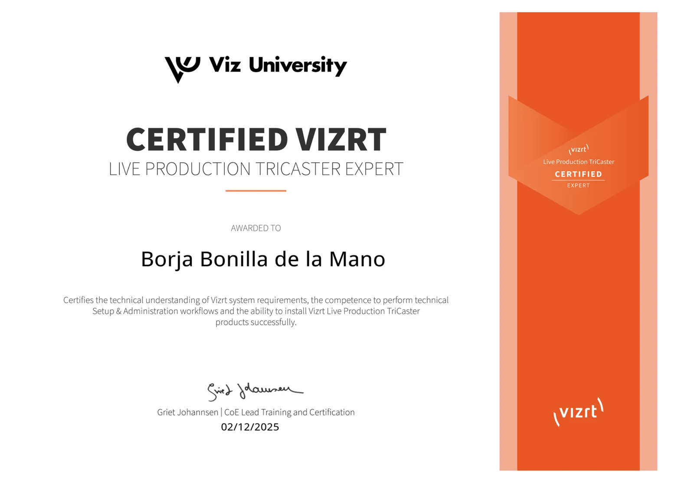
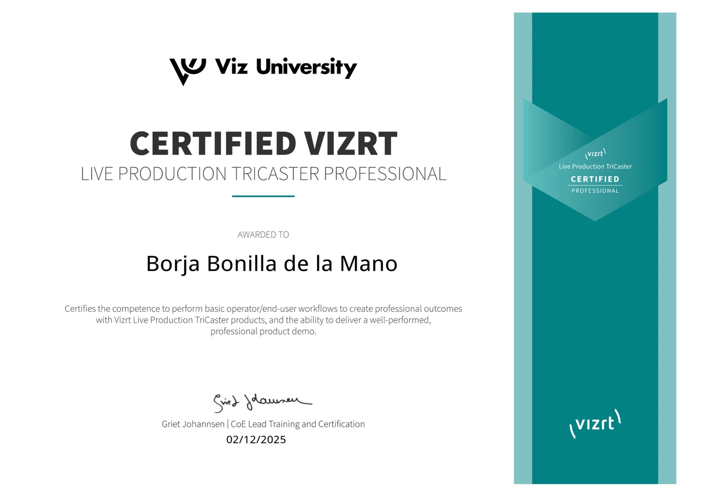
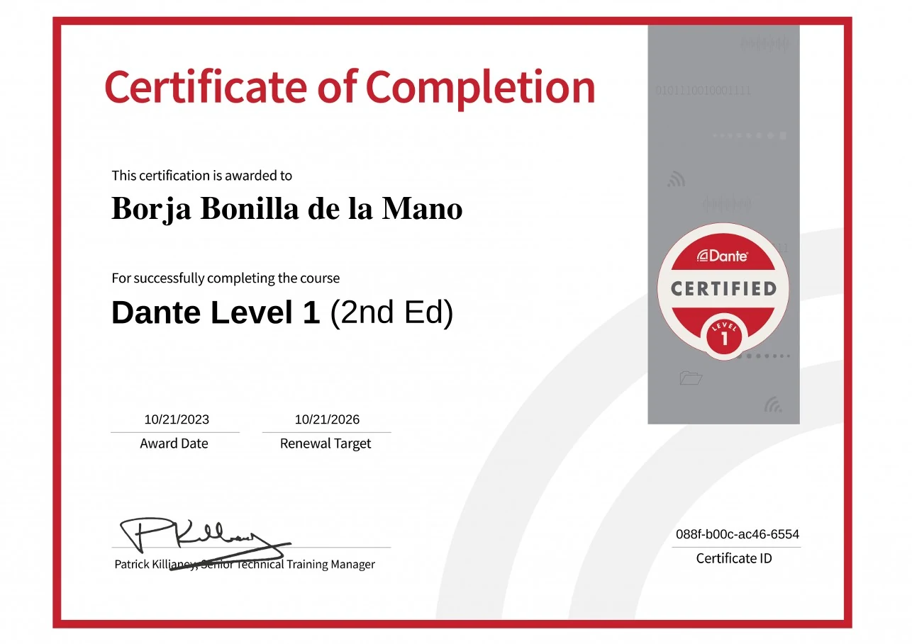
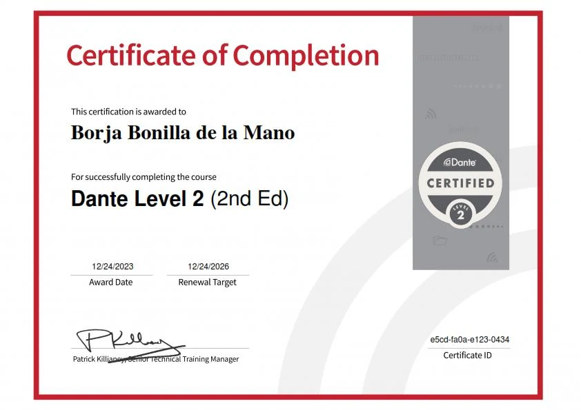
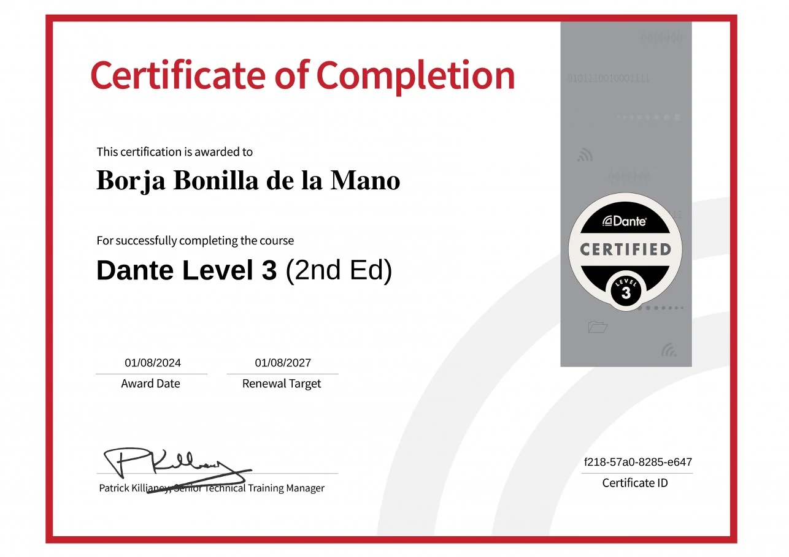
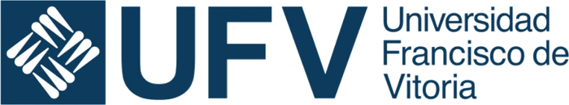

TriCaster, el sistema de producción en directo creado por NewTek, forma hoy parte de Vizrt. Toda mi formación en este ecosistema está acreditada por Viz University, el programa oficial de certificación del fabricante, hasta su nivel más alto: TriCaster Expert.

El nivel más alto. Acredita el conocimiento técnico de los requisitos del sistema y la capacidad para instalar, configurar y administrar equipos TriCaster.

Acredita la operación profesional de TriCaster para obtener resultados de calidad broadcast y la capacidad de realizar demostraciones de producto.
Además de las certificaciones, he completado la formación oficial en todo el ecosistema Vizrt: grafismo, platós virtuales, repetición y conectividad IP.
Dante es el estándar mundial de audio sobre red IP, presente en televisión, eventos, teatros y estudios de todo el mundo. He completado el programa oficial de certificación de Audinate, creador de Dante, en sus tres niveles: del primer enrutado al diseño y la resolución de problemas en redes de audio de gran escala.

Fundamentos del audio en red: Dante Controller, descubrimiento de dispositivos, enrutado de canales y configuración básica de un sistema.

Sistemas de tamaño medio: elección y configuración de switches, sincronización de reloj, latencia, flujos multicast y redundancia.

El nivel avanzado: diseño de redes de audio a gran escala, QoS, VLAN, gestión de multicast y diagnóstico de problemas en sistemas complejos.
Una certificación que aplico en directo: diseño, configuro y mantengo redes Dante que unen microfonía, mesas y sistemas de grabación en una sola red de audio IP, en producciones reales. Ver mis proyectos de audio →
Además de la técnica audiovisual, desarrollo webs y aplicaciones a medida con nivel de programador junior. Llevo dos años trabajando a diario con estos lenguajes y con las principales herramientas de inteligencia artificial para programar.
La estructura de cada página web
Diseño, maquetación y animaciones
Interactividad y lógica en el navegador
Scripts, automatización y tratamiento de imagen
Mi entorno de trabajo diario
Asistente de código integrado en VS Code
Desarrollo de proyectos completos con IA
Consulta, análisis y generación de código
Resolución de problemas y documentación
Todo lo que desarrollo lo implemento con vibe coding: programo conversando con la inteligencia artificial. Yo defino qué se necesita y cómo debe funcionar, la IA propone el código, y yo lo dirijo, lo reviso y lo pruebo hasta que hace exactamente lo que pide el cliente.
Este mismo portfolio está construido así.
La base de todo: cinco años aprendiendo a contar historias con imagen y sonido, desde la teoría hasta la práctica en plató.
Formación práctica en las herramientas profesionales de vídeo, 3D y diseño gráfico.

Grado en Psicología por la Universidad Nacional de Educación a Distancia, con especialización en el ámbito clínico y sanitario.